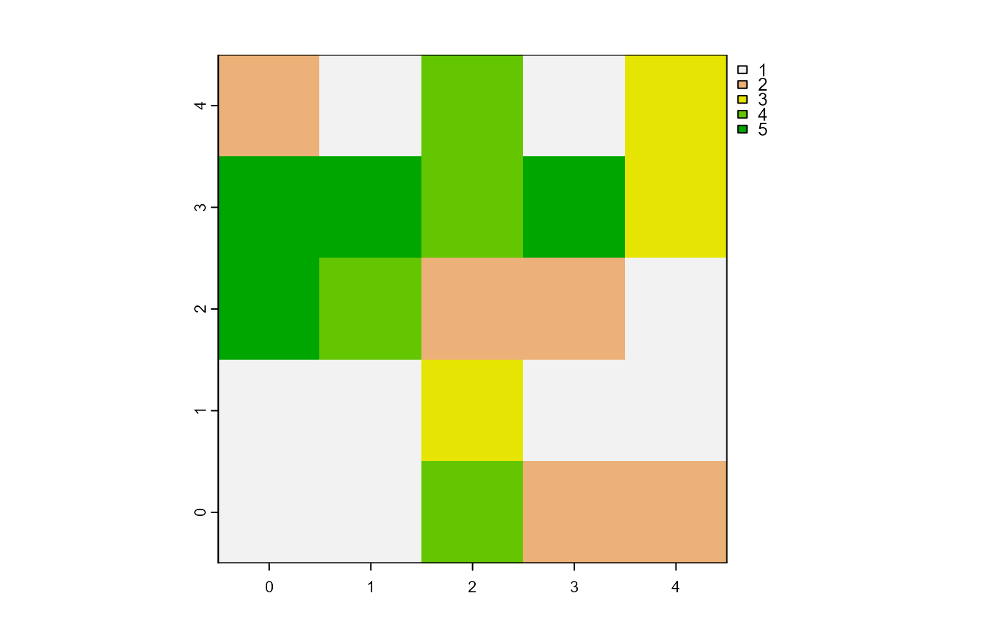

Report one patch or one turtle among agents which has its variable equals
to the maximum value.
maxOneOf(agents, world, var)
# S4 method for matrix,worldMatrix,missing
maxOneOf(agents, world)
# S4 method for matrix,worldArray,character
maxOneOf(agents, world, var)
# S4 method for agentMatrix,missing,character
maxOneOf(agents, var)Matrix (ncol = 2) with the first column pxcor and the second
column pycor representing the patches coordinates, or
AgentMatrix object representing the moving agents.
WorldMatrix or worldArray object.
Character. The name of the selected agents variable.
If agents are patches and the world is a
worldMatrix object, var must not be provided. If
agents are patches and the world is a worldArray
object, var is the name of the layer to use to define the patches
values. If agents are turtles, var is one of
the turtles' variable and can be equal to xcor,
ycor, any of the variables created when turtles were created,
as well as any variable created using turtlesOwn().
Matrix (ncol = 2, nrow = 1) with the first column pxcor and
the second column pycor representing the coordinates of the patch (or of one of the patches) among the agents which has its variable
equals to the maximum value
among the agents, or
AgentMatrix of length 1 representing the turtle (or one of
the turtles) among the agents which has its variable var equals to the maximum value
among the agents.
world must not be provided if agents are turtles.
If there are several patches or turtles among agents with their
variable equal to the maximum
value, one is chosen randomly. To access to all patches or turtles among
agents which have their variable equal
to the maximum value, use withMax().
Wilensky, U. 1999. NetLogo. http://ccl.northwestern.edu/netlogo/. Center for Connected Learning and Computer-Based Modeling, Northwestern University. Evanston, IL.
# Patches
w1 <- createWorld(minPxcor = 0, maxPxcor = 4, minPycor = 0, maxPycor = 4,
data = sample(1:5, size = 25, replace = TRUE))
plot(w1)

p1 <- maxOneOf(agents = patches(w1), world = w1)
# Turtles
t1 <- createTurtles(n = 10, coords = randomXYcor(w1, n = 10),
heading = sample(1:3, size = 10, replace= TRUE))
t2 <- maxOneOf(agents = t1, var = "heading")